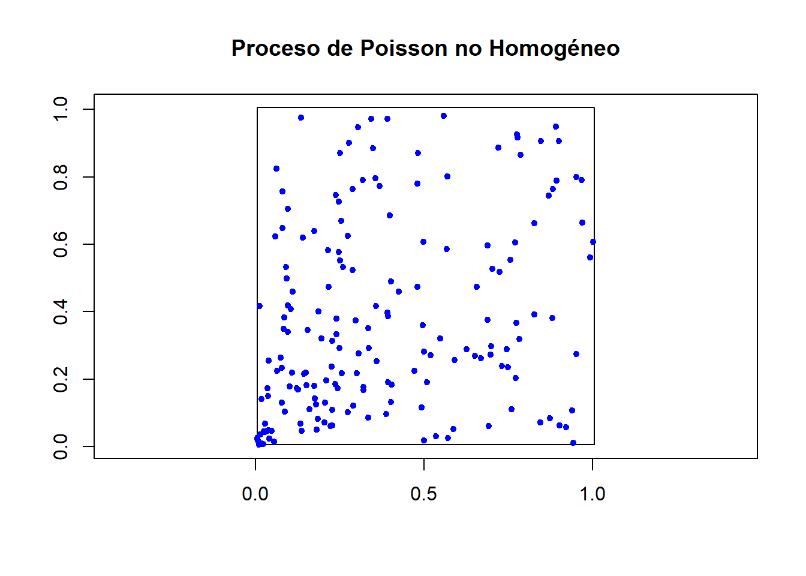
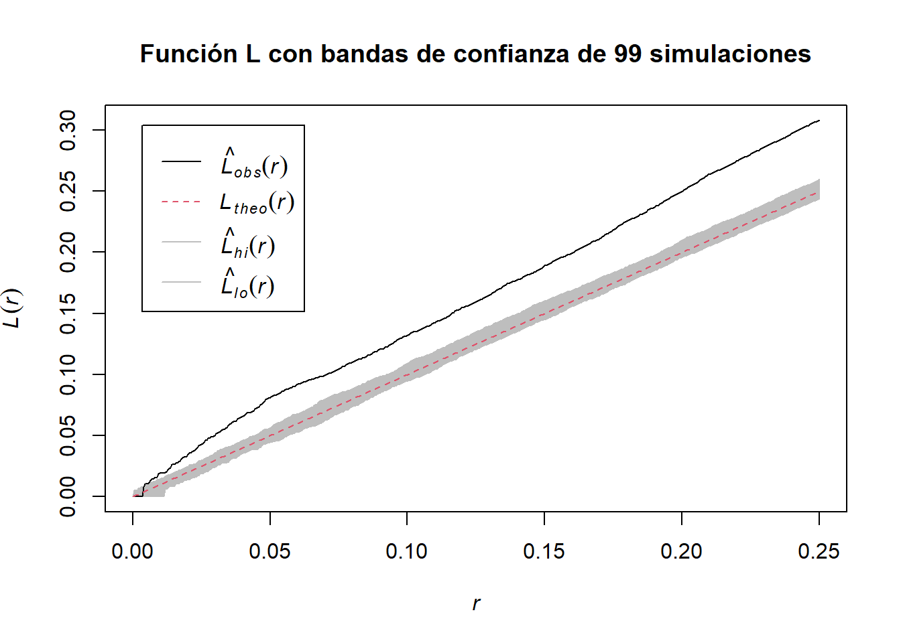

En este capítulo se presenta uno de los modelos básicos para el tratamiento de datos puntuales: el proceso Poisson. Para motivar su uso en problemas espaciales, primero recordaremos la génesis de éste en el contexto de los procesos en el tiempo.
3.1 Proceso Poisson homogéneo
Uno de los objetivos principales en el análisis de datos puntuales, es caracterizar conteos de eventos que ocurren de manera (presuntamente) aleatoria. Primero recordemos qué es un proceso de conteo.
Definición 3.1 (Proceso de conteo) Sea \(N={(N_t)}_{t\geq 0}\) un proceso estocástico. \(N\) es un proceso de conteo si toma valores en \(\mathbb{N}\cup\{0\}\) y si \(s<t\), entonces, \(N_s\leq N_t\).
Hay diversas variables aleatorias de conteo, pero la ley de eventos raros de Poisson (ver por ejemplo, (Klenke 2020)), sugiere que para el conteo de eventos con probabilidad ‘’baja’’ de ocurrir, es razonable utilizar variables aleatorias Poisson.
Definición 3.2 (Proceso Poisson homogéneo) Un proceso de conteo \(N={(N_t)}_{t\geq 0}\) es un proceso Poisson homogéneo de intensidad \(\lambda>0\) si cumple que
\(N_0=0\), casi seguramente.
Tiene incrementos independientes y estacionarios, casi seguramente.
Para \(s<t\), un incremento es tal que \((N_t-N_s)\sim\text{Poi}(\lambda(t-s))\).
Existen definiciones del proceso Poisson homogéneo equivalentes a Definición 3.2, pero ésta es de particular utilidad porque nos proporciona una manera de calcular explícitamente las distribuciones finito dimensionales de un proceso Poisson homogéneo y además éstas únicamente dependen de la longitud de los incrementos.
Con estas propiedades, tenemos el siguiente estimador de máxima verosimilitud para el parámetro de intensidad \(\lambda\).
Teorema 3.1 (Distribución conjunta y estimador máximo verosímil) Sea \(N={(N_t)}_{t\geq 0}\) un proceso Poisson homogéneo con intensidad \(\lambda>0\) observado en el intervalo \((0,T_0]\). Supongamos que se registran \(n\) eventos en los tiempos \(0<w_1<w_2<\cdots<w_n\leq T_0\). Entonces
Dado que \(N_{T_0}=n\), la densidad conjunta de los tiempos de ocurrencia es
Bajo esta formulación, el estimador máximo verosímil de \(\lambda\) es
\[\widehat{\lambda}=\frac{N_{T_0}}{T_0}.\]
Prueba.
Esta primera afirmación es un resultado clásico de los procesos de Poisson homogéneos y puede revisarse por ejemplo en (Kingman 2007) o en (Karlin y Taylor 1981).
Como \(N\) es un proceso Poisson homogéneo, la probabilidad de observar exactamente \(n\) eventos en el intervalo \((0,T_0]\) es
De lo anterior, se concluye que el estimador máximo verosímil es
\[\widehat{\lambda}=\frac{N_{T_0}}{T_0}.\]
El valor del estimador es intuitivo ya que dice que la intensidad estimada es el número de eventos por unidad de tiempo, lo cual es consistente con la intuición tras la palabra tasa. Además, se puede verificar que este es un estimador consistente e insesgado que además alcanza la cota de Cramér-Rao.
3.2 Proceso Poisson espacial homogéneo
Siguiendo la idea de que un proceso de Poisson sobre el tiempo cuenta cuántos puntos caen en cada intervalo de \(\mathbb{R}_+\) tras arrojarlos a una intensidad \(\lambda>0\), es posible extender la noción del proceso Poisson a espacios más generales.
Definición 3.3 (Proceso Poisson espacial homogéneo) Sea \(S\subseteq\mathbb{R}^d\) un conjunto Lebesgue-medible y \(\mathcal{A}\) una familia de subconjuntos Lebesgue-medibles de \(S\) cerrada bajo uniones e intersecciones finitas. Decimos que un proceso espacial \(N={(N(A))}_{A\in\mathcal{A}}\) es un proceso Poisson homogéneo de intensidad \(\lambda>0\) en la región \(S\) si - Para todo \(A\in\mathcal{A}\) se tiene que \(N(A)\sim\text{Poi}(\lambda|A|)\), donde \(|A|\) representa la medida de Lebesgue del conjunto \(A\). - Para todos \(A_1,\ldots,A_n\in\mathcal{A}\) disjuntos, las variables aleatorias \(N(A_1),\ldots,N(A_n)\) son independientes. - Dado que \(N(A)=n\), las ubicaciones \(X_1,\ldots,X_n\) de los eventos son uniformes en \(A\), es decir
Así, un proceso Poisson espacial homogéneo es un proceso donde la intensidad con la que se arrojan puntos a una región \(A\) del espacio, es proporcional al tamaño de éste. Esto hace sentido con la idea intuitiva de que ‘’es más probable que contemos más puntos si el área es más grande’’.
En analogía, metodológica e intuitivamente, al caso temporal, tenemos el siguiente estimador para la intensidad de un proceso Poisson espacial homogéneo.
Teorema 3.2 (Estimador máximo verosímil) Sea \(N={(N(A))}_{A\in\mathcal{A}}\) un proceso Poisson espacial homogéneo con intensidad \(\lambda>0\) observado en la región \(A_0\), de tamaño \(|A_0|\). Supongamos que se registran \(n\) eventos en las posiciones \(x_1,x_2,\ldots,x_n\in A_0\). Entonces el estimador máximo verosímil de \(\lambda\) es
\[\widehat{\lambda}=\frac{N(A_0)}{|A_0|}.\]
Prueba. Siguiendo la idea del caso temporal, la función de verosimilitud de \(\lambda\) se puede calcular con las distribuciones conocidas como
De lo anterior, se concluye que el estimador máximo verosímil es
\[\widehat{\lambda}=\frac{N(A_0)}{|A_0|}.\]
El valor del estimador es intuitivo ya que dice que la intensidad estimada es el número de eventos por unidad de volumen, lo cual es consistente con la intuición tras la palabra tasa. Además, se puede verificar que este es un estimador consistente e insesgado que además alcanza la cota de Cramér-Rao.
3.3 Proceso Poisson no homogéneo
Regresamos al contexto temporal para motivar el siguiente modelo. Una de las principales debilidades del proceso Poisson homogéneo viene de la homogeneidad. El asumir que la intensidad es constante puede llevar a ideas como que los accidentes de tránsito ocurren a la misma tasa en la madrugada que en la tarde, y eso no es una hipótesis razonable, en general. La manera más inmediata de resolver esto es considerando que la intensidad ahora también varía en el tiempo.
Definición 3.4 (Proceso Poisson no homogéneo) Sea \(\lambda:[0,\infty)\to[0,\infty)\) una función tal que
\[\int_0^\infty\lambda(t)dt=\infty.\]
Un proceso de contar \(N={(N_t)}_{t\geq 0}\) es un proceso Poisson no homogéneo con función de intensidad \(\lambda(t)\) si satisface que
\(N_0=0\) casi seguramente.
Tiene incrementos independientes.
\(\mathbb{P}[N_{t+h}-N_t=1]=\lambda(t)h+o(h)\).
\(\mathbb{P}[N_{t+h}-N_t\geq 2]=o(h)\).
Como consecuencia de esta formulación infinitesimal, se tiene el siguiente resultado, el cual da la función de densidad de los incrementos de un proceso Poisson no homogéneo.
Teorema 3.3 (Densidad de los incrementos) Sea \(N={(N_t)}_{t\geq 0}\) un proceso Poisson no homogéneo con función de intensidad \(\lambda\). Entonces, para cada \(n\geq 0\) y \(0\leq s<t\), se tiene que
Los métodos utilizados para estos problemas, son métodos para estimación de funciones. Hay distintas maneras de abordar este problema. El problema es que, como la función \(\lambda\) no es propiamente una densidad, es necesario trabajar con alguna función relacionada que sí lo sea. Si consideramos la función \(f:[0,T]\to\mathbb{R}\) dada por
\[f(t)=\frac{\lambda(t)}{\Lambda(T)},\]
ahora sí tenemos una función de densidad en el intervalo \([0,T]\). Hay muchas maneras de resolver este problema de estimación de funciones. La manera más directa y como secuencia natural al Curso de Modelos Estadísticos, más específicamente al tema de regresión Poisson. Entonces, utilizando una función de enlace \(\log\), se tiene el modelo Log-Lineal
donde \(Z_1,\ldots,Z_p\) son covariables temporales y \(\beta_0,\ldots,\beta_p\) son los coeficientes a estimar (podría verse como un problema de estimación de tendencia y estacionalidad de una serie de tiempo, por ejemplo). Otra manera sería considerar la versión empírica de \(\lambda\) que se tiene por los tiempos \(t_1,\ldots,t_n\) y utilizar algún método de suavizamiento por kernel de modo que se tendría
para \(\kappa\) un kernel Gaussiano y un ancho de banda \(h\).
Una manera de validar modelos de procesos Poisson no homogéneos y también de simularlos es el siguiente, que relaciona un proceso Poisson homogéneo con uno no homogéneo a partir de un cambio de tiempo determinista.
Teorema 3.4 (Relación entre procesos Poisson homogéneos y no homogéneos)
Sea \({(N_t)}_{t\geq 0}\) un proceso Poisson no homogéneo con funciones de intensidad \(\lambda\) y de intensidad acumulada \(\Lambda\), con inversa generalizada \(\Lambda^{-1}\). Entonces el proceso \({(N_{\Lambda^{-1}(t)})}_{t\geq 0}\) es un proceso Poisson homogéneo de intensidad \(\lambda=1\).
Sea \({(N_t)}_{t\geq 0}\) un proceso Poisson homogéneo de intensidad \(\lambda=1\) y sea \(\lambda:[0,\infty)\to[0,\infty)\) una función no negativa tal que \(\displaystyle\int_0^\infty\lambda(t)dt=\infty\). Definimos la función \(\Lambda\) como \(\displaystyle\Lambda(t)=\int_0^t\lambda(u)du\). Entonces el proceso \({(N_{\Lambda(t)})}_{t\geq 0}\) es un proceso Poisson no homogéneo con función de intensidad \(\lambda\).
3.4 Proceso Poisson espacial no homogéneo
Con las ideas de la sección anterior, un proceso Poisson espacial no homogéneo, intuitivamente, es uno en que la intensidad depende del punto del espacio en el que uno se encuentre. Teóricamente, la extensión no es tan directa como se pensaría en primera instancia.
Definición 3.5 (Proceso Poisson espacial no homogéneo) Sea \(S\subseteq\mathbb{R}^d\) un conjunto Lebesgue-medible y \(\mathcal{A}\) una familia de subconjuntos Lebesgue-medibles de \(S\) cerrada bajo uniones e intersecciones finitas. Decimos que un proceso espacial \(N={(N(A))}_{A\in\mathcal{A}}\) es un proceso Poisson no homogéneo con función de intensidad \(\lambda:S\to[0,\infty)\) en la región \(S\) si
Para todo \(A\in\mathcal{A}\) se tiene que \(N(A)\sim\text{Poi}(\Lambda(A))\), donde
\[\Lambda(A)=\int_A\lambda(x)dx.\]
Para todos \(A_1,\ldots,A_n\in\mathcal{A}\) disjuntos, las variables aleatorias \(N(A_1),\ldots,N(A_n)\) son independientes.
Dado que \(N(A)=n\), las ubicaciones \(X_1,\ldots,X_n\) de los eventos son tales que
En este caso, la función de intensidad en realidad se toma como densidad para una medida, a la cual se le llama también medida de Poisson. Detalles teóricos sobre estos procesos de Poisson con intensidades \(\lambda\) generales se pueden revisar en (Kingman 2007).
Ejemplo 3.1 Sean \(S\subseteq\mathbb{R}^2\) y \(\lambda(x,y)=e^{-(x^2+y^2)}\). Entonces, si \(A=\{(x,y)\ :\ x^2+y^2\leq r^2\}\), la medida de \(A\) respecto a \(\lambda\) es
La manera en la que se puede hacer inferencia sobre la función \(\lambda\) es la misma que en el caso temporal. La función de verosimilitud sobre la región \(A\) de este modelo es
Una hipótesis usual es considerar que \(Z={(Z(s))}_{s\in A}\) es un campo Gaussiano de media 0. Dos métodos clásicos para la estimación son los siguientes:
Con una discretización del espacio en una rejilla de \(n_1\times n_2=N\) celdas \({(s_{ij})}_{(i,j)\in\{1,\ldots,n_1\}\times\{1,\ldots,n_2\}}\). El número promedio de eventos por celda es
donde \(\beta=(\beta_0,\beta_1,\ldots,\beta_p),\ c(s_{ij})=(1,c_1(s_{ij}),\ldots,c_p(s_{ij})),\ f_s\) es un ruido dependiente de la estructura espacial y \(f_u\) es un ruido no necesariamente dependiente del espacio.
Con un proceso análogo al autorregresivo de las series de tiempo
\[Z(s)=\sum_{i=1}^nZ_i\phi_i(s),\]
donde \((Z_1,\ldots,Z_n)\) es un vector Gaussiano y \({(\phi_i(s))}_{i=1}^n\) es una base de funciones deterministas. Una alternativa usual es considerar que el campo Gaussiano tiene matriz de covarianza como en el variograma de Mathéron presentado en la sección Sección 2.2.2.
Este modelo no se limita únicamente a que tome valores de puntos en el espacio. La definición contempla casos en los que la función de intensidad sea de la forma \(\lambda:[0,\infty)\times\mathbb{R}^d\to\mathbb{R}_+\) como \(\lambda=\lambda(t,x)\), es decir, que la intensidad dependa del instante y de la ubicación. Un problema para ilustrar esta forma de \(\lambda\) es el de las lluvias, que su intensidad puede depender de la hora del día y del lugar del mundo del que se trate.
De la misma manera que con el análisis de procesos temporales, es posible usar suavizamiento por kernel para estimar \(\lambda\) a partir de una medida empírica. Como se mencionó en el caso temporal, la función \(\lambda\) no necesariamente es una densidad, pero la función
\[f(x)=\frac{1}{\Lambda(A)}\lambda(x)\]
sí es una densidad en la región \(A\). Entonces, los estimadores de kernel para \(f\) y \(\lambda\) basados en un conjunto de observaciones \(X_1,\ldots,X_n\) están dados por
donde \(h\) es un ancho de banda. Una elección usual para \(\kappa\) es la normal multivariada.
3.5 Pruebas de clústering
La última propiedad enunciada en la definición Definición 3.3 hace que al proceso Poisson espacial homogéneo también se le llame el modelo de aleatoriedad espacial completa o CSR por sus siglas en inglés (complete spatial randomness). Si bien la mayoría de procesos están lejos de ser CSR, éste ayuda a diferenciar entre patrones regulares y conglomerados (o clusterizados).
Dada una muestra de puntos, un buen primer paso es preguntarse si hay evidencia para rechazar la hipótesis de que se trate de un CSR.
3.5.1 Prueba con quadrat
Un método para dar evidencia a favor o en contra de la hipótesis nula \(H_0\) ser CSR es con una prueba \(\chi^2\) (ver (Moraga 2023)). El método quadrat coincide en particionar la región de estudio en \(r\) renglones y \(c\) columnas, de modo que se obtenga una retícula de regiones disjuntas de la misma área (quadrats). Así, bajo \(H_0\), el número esperado de observaciones en cualquier región de la retícula es el mismo: sean \(n\) el número de observaciones, \(m\) el número de quadrats y \(n_i\) el número de puntos en el \(i\)-ésimo quadrat; entonces el número esperado de puntos en cada quadrat es \(n^*=n/m\).
Dado lo anterior, el estadístico de prueba se puede calcular por
\[X^2=\sum_{i=1}^m\frac{{(n_i-n^*)}^2}{n^*}.\]
Se puede verificar que, bajo \(H_0\), entonces \(X^2\sim\chi^2_{m-1}\).
Es muy importante destacar que este método depende de la configuración de quadrats (puede haber regiones sin puntos). También esta prueba no puede distinguir entre distintos patrones localmente.
En R se tiene la función quadrat.test() para probar la hipótesis de CSR. La interpretación es de acuerdo a la siguiente clave:
alternative = “two.sided” prueba \(H_0:\) CSR vs. \(H_a:\) no CSR (regular o clusterizada).
alternative = “regular” prueba \(H_0:\) CSR o clusterizada vs. \(H_a:\) regular.
alternative = “clustered” prueba \(H_0:\) CSR o regular vs. \(H_a:\) clusterizada.
3.5.2 Las funciones K y L de Ripley
Pensando en datos puntuales sobre regiones del espacio \(S\subseteq\mathbb{R}^2\), se puede usar otro estadístico para probar la homogeneidad del proceso puntual.
Definición 3.6 (Funciones K y L de Ripley) Sea \(N={(N(A))}_{A\in\mathcal{A}}\) un proceso Poisson espacial en \(\mathbb{R}^2\) con función de intensidad \(\lambda\).
Dada la forma de la función \(K\) bajo CSR, se tiene el siguiente criterio:
Si \(K(r)>\pi r^2\) o, equivalentemente, \(L(r)>r\), la función de intensidad favorece el clústering.
Si \(K(r)<\pi r^2\) o, equivalentemente, \(L(r)<r\), la función de intensidad favorece la dispersión.
Una manera de estimar la función \(K\) es utilizando que es un conteo. Para hacer éste, es necesario tomar en cuenta que los eventos contados cerca de la frontera de una región \(A\) pueden ser bajos. Por ello s eintroduce un peso \(w_{ij}\) correspondiente al recíproco a la proporción del círculo con centro en \(x_i\) y radio \(d_{ij}\) contenido en \(A\).
Definición 3.7 (Estimadores de las funciones de Ripley) Sea \(X=\{X_1,\ldots,X_n\}\) un patrón de puntos en \(S\). La función \(K\) de Ripley empírica está dada por
Los intervalos de confianza para estas funciones empíricas típicamente son intervalos bootstrap. La idea de utilizar las funciones de Ripley es parecida a la de las gráficas QQ en inferencia de distribuciones: entre más cerca esté el proceso de ser homogéneo en el espacio, más parecidas serán las funciones teórica y empírica.
En el siguiente ejemplo se muestra un ejemplo del uso de estas funciones con datos simulados directamente de un proceso Poisson homogéneo.
Ejemplo 3.2 Primero generamos un proceso Poisson homogéneo de intensidad \(\lambda=100\) y revisamos la región \(A=[0,1]\times[0,1]\).
plot(L_env, main ="Función L con bandas de confianza de 99 simulaciones")
Al ser las funciones empíricas parecidas a las funciones teóricas, podemos afirmar que los datos trabajados sí corresponden a un CSR.
Para sustentar esta última afirmación, podemos utilizar la prueba quadrat, la cual también da evidencia a favor de la hipótesis de CSR.
Código
quadrat.test(X, nx =4, ny =4)
Chi-squared test of CSR using quadrat counts
data: X
X2 = 10.17, df = 15, p-value = 0.3822
alternative hypothesis: two.sided
Quadrats: 4 by 4 grid of tiles
Para ejemplificar cuándo no ocurre el CSR, tenemos otro ejemplo artificial donde la intensidad es muy alta cerca del \((0,0)\).
Ejemplo 3.3 Primero generamos un proceso Poisson no homogéneo de intensidad \(\displaystyle\lambda(x,y)=100{(x^2+y^2)}^{-1/2}\Bbb{1}_{\{x^2+y^2>0\}}\) y revisamos la región \(A=[0,1]\times[0,1]\).
Código
library(spatstat)lambda <-function(x, y) { ifelse(x ==0& y ==0, 0, 100/sqrt(x^2+ y^2)) }x <-seq(0.01, 1, length.out =100)y <-seq(0.01, 1, length.out =100)grid <-expand.grid(x = x, y = y)grid$lambda <-lambda(grid$x, grid$y)lambda_im <-as.im(data.frame(x = grid$x, y = grid$y, z = grid$lambda), W =owin(c(0,1), c(0,1)))set.seed(612003)X_nhpp <-rpoispp(lambda_im)plot(X_nhpp, main ="Proceso de Poisson no Homogéneo",pch =20, cols ="blue", show.window =TRUE, axes =TRUE, xlab ="X", ylab ="Y" )

Así, la función \(K\) empírica superpuesta a la teórica se ve como
plot(L_empenv, main ="Función L con bandas de confianza de 99 simulaciones")

Al ser las funciones empíricas muy distintas a las funciones teóricas, podemos afirmar que los datos trabajados no corresponden a un CSR.
Para sustentar esta última afirmación, podemos utilizar la prueba quadrat, la cual también da evidencia en contra de la hipótesis de CSR.
Código
quadrat.test(X_nhpp, nx =4, ny =4)
Chi-squared test of CSR using quadrat counts
data: X_nhpp
X2 = 146.13, df = 15, p-value < 2.2e-16
alternative hypothesis: two.sided
Quadrats: 4 by 4 grid of tiles
Karlin, Samuel, y Howard Taylor. 1981. A Second Course in Stochastic Processes. First. Academic Press.